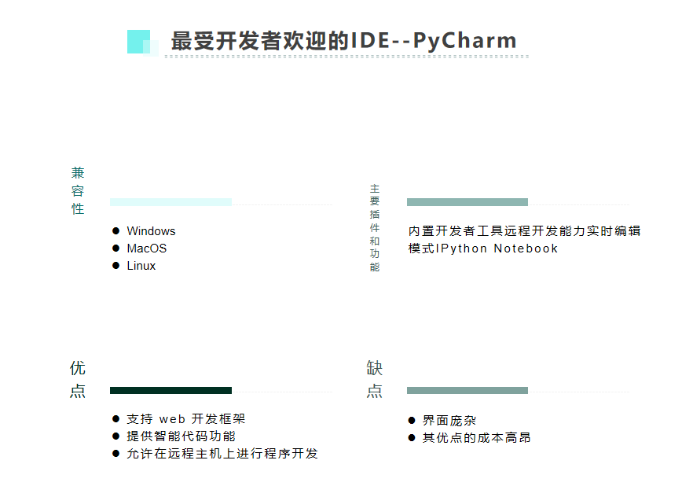
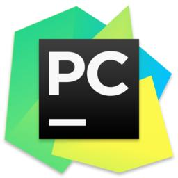
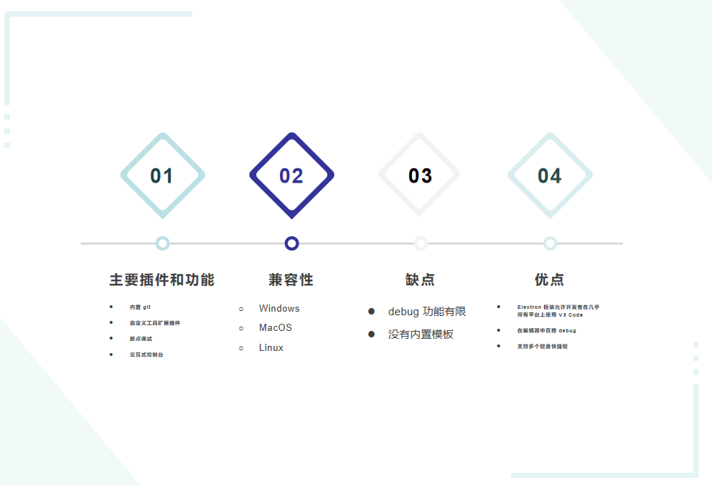
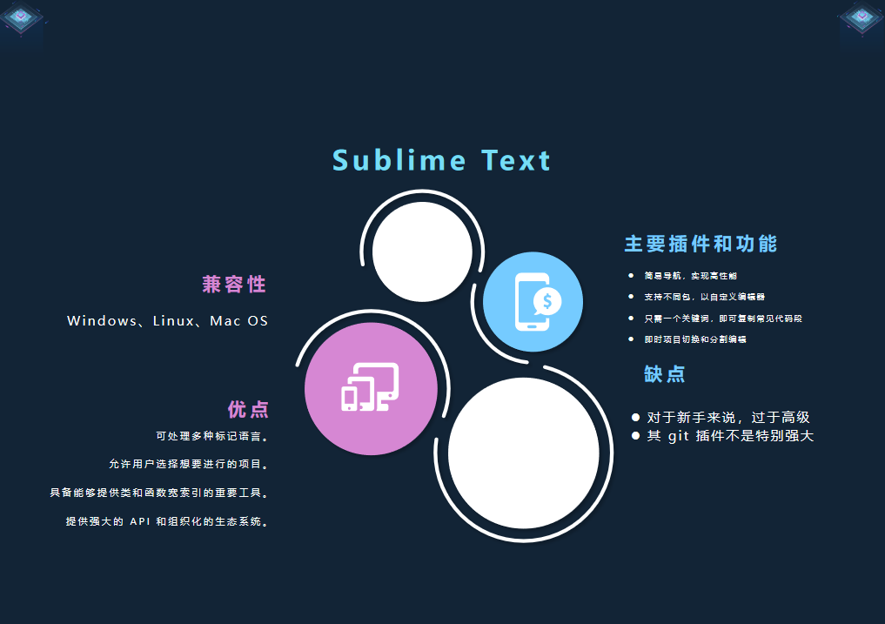
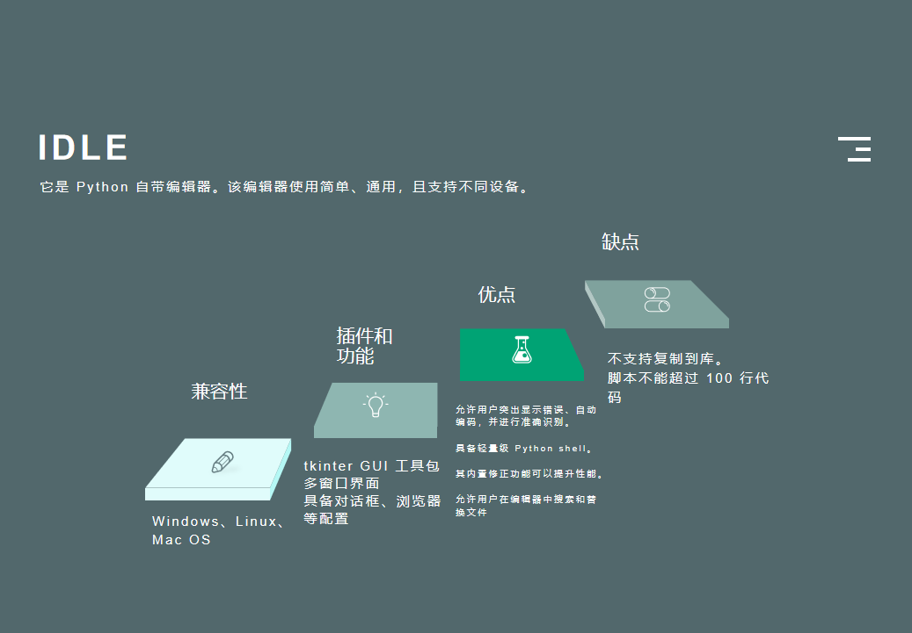

Python IDE
IDE 是开发者创建程序时使用的软件包。它通过简单的用户界面集成多个高度关联的组件，从而最大化程序员的生产效率。本质上，IDE 是一种改进代码创建、测试和 debug 流程的工具，它使这些工作更加简单。
全世界最好用的IDEPyCharm


Visual Studio CodeIDE 编辑器
SublimeText
Sublime Text 被认为是最好的 Python 编辑器，因为它简单、通用、方便。它使用广泛，可用于不同的平台。


IDLE
地址传送门: 👀👀